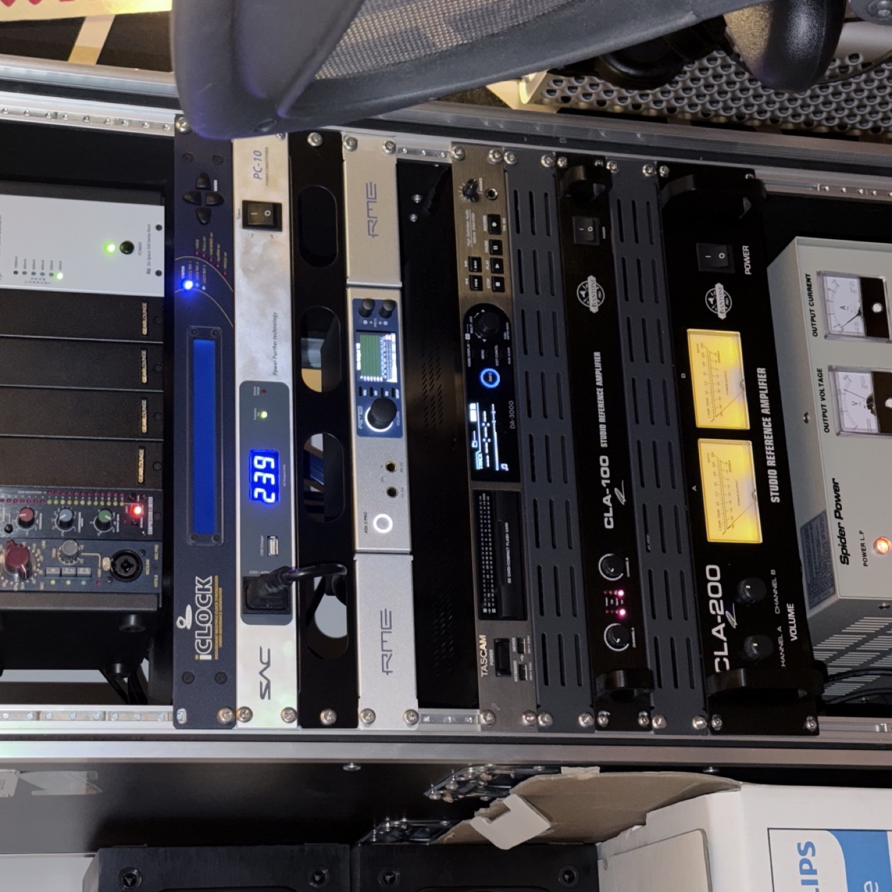
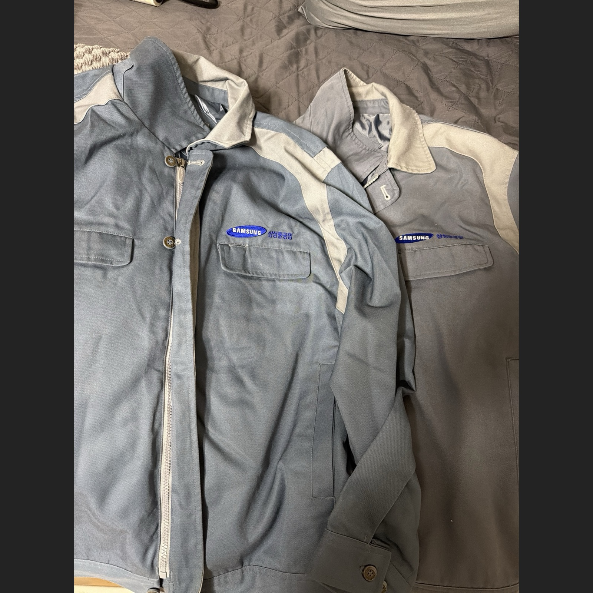
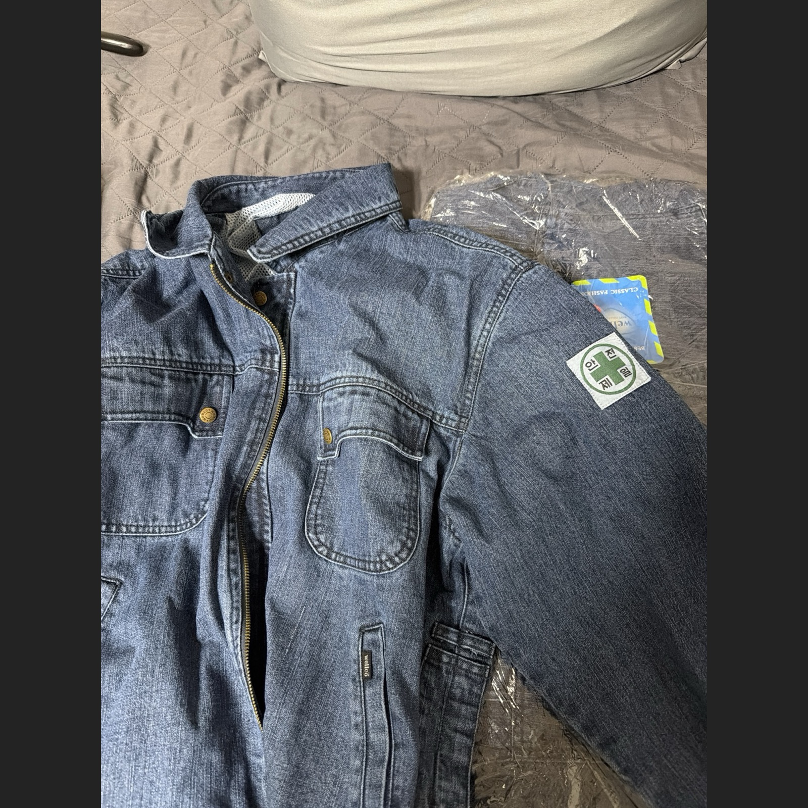
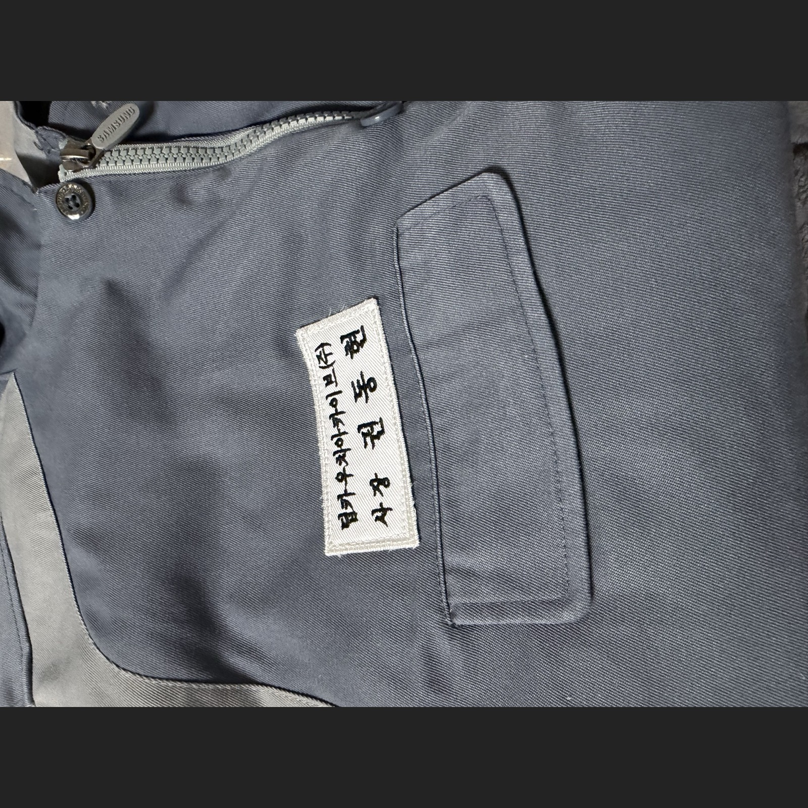
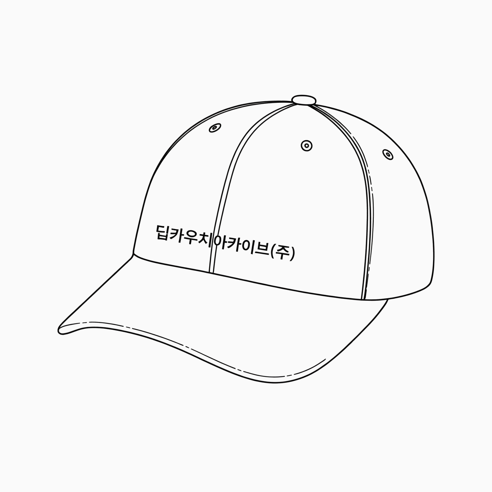
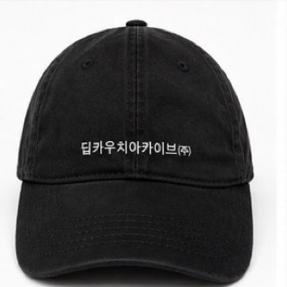
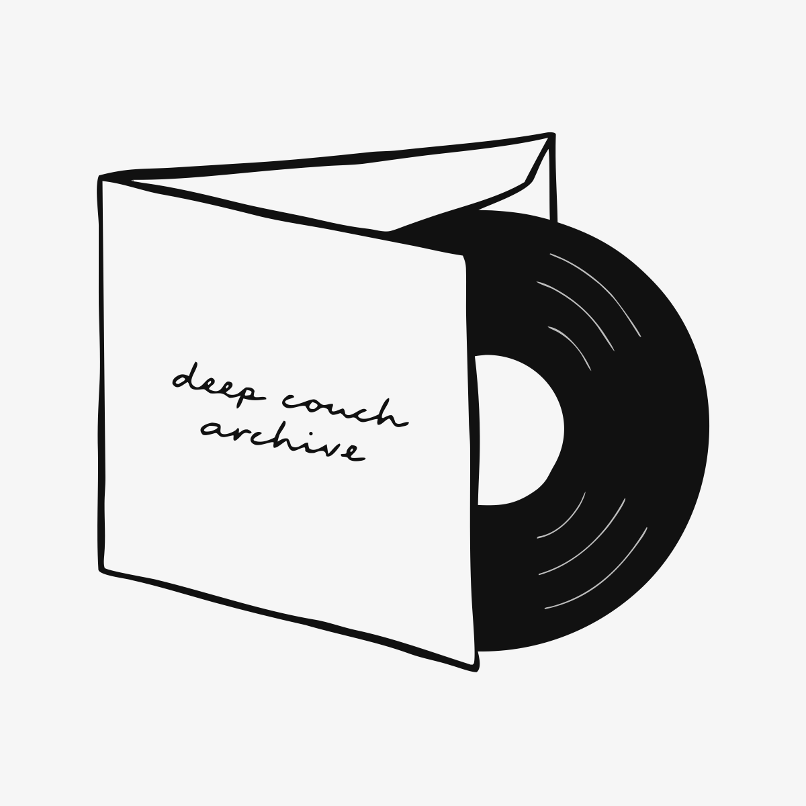

Deep Couch Archive
소리, 공간, 사람, 물성, 태도가 맞물리는 사운드 스튜디오 아카이브. 지금은 브랜드를 설명하는 페이지보다, 실제로 작동하는 공간의 증거를 먼저 보여주는 웹사이트가 필요하다.
이 첫 프로토타입은 DCA의 장비 기록, 작업복, 라벨, 인쇄물, 손글씨 원본을 하나의 필드 가이드로 묶는다. 화면의 이미지는 실제 자료를 그대로 소비하지 않고, 구조와 물성을 읽는 손그림 도면으로 다시 편집한다.
2026-07-14 업데이트. 첫 웹사이트는 과장된 랜딩페이지가 아니라 DCA가 이미 가진 자료를 검토 가능한 인덱스로 보여준다. 판단 기준은 진짜 물성, 실제 맥락, 사람의 행동이다.


ARCHIVE INDEX
자료가 먼저 말하게 한다.
DCA의 첫 화면은 추상적인 브랜드 문구보다 실제 자료를 정렬해서 보여주는 편이 맞다. 장비, 작업복, 라벨, 프린트, 아이덴티티 원본은 모두 다른 용도지만 하나의 운영 흔적으로 읽혀야 한다.

Audio rack sketch
DCA가 사운드 스튜디오라는 사실을 가장 먼저 증명하는 첫 기록.


Workwear pair
홍보용 굿즈보다 실제 현장에서 입을 수 있는 물건에 가깝다.


Work shirt
로고를 크게 말하지 않고, 입는 사람의 행동 안에서 자연스럽게 드러나는 방향.

Korean name label
한글 자연어와 실제 물성이 만나는 작은 접점. DCA의 말투를 담기 좋다.


Washed cap sketch
팔기 위한 모자보다 자연스럽게 쓰고 남는 모자에 가까운 기준.

Record and print
카탈로그, 카드, 웹 캡션으로 확장할 수 있는 인쇄 방향.
Handwritten wordmark source
손글씨 원본은 로고, 라벨, 인쇄물 제작 소스로 관리한다.
FIELD GUIDE
DCA답게 보이는가보다, 실제로 작동하는가.
이 사이트의 모든 섹션은 세 가지 질문을 통과해야 한다. 사진에서만 좋은지, 실제 스튜디오 맥락에서 자연스러운지, 사람이 강요 없이 쓰고 싶어 하는지.
진짜 물성
이미지 속 질감이 실제로 만졌을 때도 설득되는가. 라벨, 작업복, 장비는 시간이 지나도 버틸 수 있어야 한다.
실제 맥락
DCA라는 사운드 스튜디오 안에 놓였을 때 뜨지 않는가. 브랜드 놀이가 아니라 운영의 흔적인가.
사람의 행동
아티스트와 엔지니어가 자연스럽게 입고, 쓰고, 열어보고, 다시 보관하고 싶어 하는가.
| 자연어 판단 | 디자인 번역 | DCA 적용 |
|---|---|---|
| 브랜드 놀이 같다 | 실제 운영 흔적 부족 | 장비, 세션, 라벨, 제작 노트를 붙인다. |
| 사진에서는 좋은데 현장에선 뜰 것 같다 | 물성 검증 실패 | 실제 착용, 실제 배치, 실제 사용 흔적을 촬영한다. |
| 조용한데 비어 보인다 | 정보 밀도 부족 | 캡션, 날짜, 파일명, 사용 맥락을 더한다. |
| 레퍼런스에는 가까운데 우리 것은 아니다 | 증거보다 구조가 앞섬 | 빌린 구조 안의 내용을 DCA 자료로 교체한다. |
MATERIAL NOTES
작은 라벨과 작업복이 먼저 브랜드가 된다.
DCA의 시각 언어는 새 장식을 많이 만드는 방식보다, 이미 있는 물건의 선택과 배치에서 시작하는 편이 자연스럽다. 작업복, 라벨, 캡, 카드 같은 물건은 아티스트가 실제로 쓰는가라는 기준으로 판단한다.

WEBSITE DESIGN SYSTEM
읽고 쓰기 위한 화면.
DCA의 웹사이트는 폰트나 색 자체로 멋을 부리기보다, 실제 자료를 읽고 찾고 비교하기 쉬운 위계와 그리드로 성격을 만든다. 아래 규칙은 화면을 새로 만들 때마다 먼저 확인한다.
DCA / PUBLIC DESIGN PHILOSOPHY / 01—07
보이기 전에, 작동하게 만든다.
DCA는 예쁜 화면보다, 읽히고 움직이는 이유를 보여주려 한다. 웹사이트, 카탈로그, 촬영 기록은 아래 기준으로 만든다.
-
01
실제 자료에서 시작한다.
사진, 장비, 라벨, 세션의 흔적이 디자인의 출발점이다. 장식은 자료가 이미 말하고 있는 것을 더 잘 보이게 할 때만 쓴다.
-
02
표면은 읽기 위해 만든다.
본문과 이미지 프레임은 흰색으로 두고, 손그림과 조용한 규칙 표면만 아주 옅은 회색 판으로 구분한다.
-
03
기기에 이미 있는 글꼴을 쓴다.
화면이 먼저 읽히도록 시스템 UI 글꼴을 쓴다. 한국어는 사용자의 운영체제에서 가장 익숙한 방식으로 렌더링된다.
-
04
폭과 여백은 비교를 돕는다.
긴 글은 정해진 읽기 폭에 두고, 비교할 자료만 넓은 그리드에 둔다. 여백은 비워 보이기 위한 장식이 아니라 판단 단위를 나누는 도구다.
-
05
이미지는 증거를 남긴다.
공개 이미지는 같은 정방형 프레임에서 반복한다. 핵심이 보이도록 크롭하고, 손그림과 실사는 같은 물건을 담는다.
-
06
조작한 뒤의 상태가 보인다.
선택됨, 포커스, 검색 결과 뒤에는 분명한 변화가 남아야 한다. 색은 기분 대신 상태를 알린다.
-
07
움직임은 변화를 설명한다.
모션은 읽기 진행률과 손그림에서 실사로 바뀌는 증거 전환처럼, 실제 변화의 위치와 내용을 짧게 설명할 때만 쓴다.
TYPE / SYSTEM UI / NO FONT DOWNLOAD
글자가 기다리게 하지 않는다.
기기에 있는 UI 글꼴을 써서 별도 웹폰트 요청을 줄인다. 모든 성능을 결정하진 않지만, 첫 문장은 기다리지 않고 익숙한 한글 조판을 그대로 쓴다.
딥카우치아카이브Deep Couch Archive
system-ui → SF / Apple SD Gothic Neo → Segoe UI → Roboto → sans-serif
DESIGN / REASON BEFORE DECORATION
장식보다, 읽을 근거.
무언가를 더하는 이유는 예뻐 보이기 때문이 아니라, 자료의 우선순위와 현재 상태를 더 정확하게 전달하기 위해서다.
그래서 DCA는 큰 문구나 효과보다 순서, 대비, 여백부터 확인한다.
01 / TYPE / SYSTEM UI
글꼴은 성격이 아니라 역할로 나눈다.
제목과 본문은 기기에 이미 있는 시스템 UI 글꼴로 읽고, 날짜·파일·상태만 모노 글꼴로 분리한다. 별도 웹폰트를 내려받지 않아 첫 문장을 바로 읽기 시작할 수 있다.
Deep Couch Archive
큰 제목은 현재 위치를, 본문은 오래 읽을 내용을 맡는다.
사용자는 macOS, Windows, Android처럼 자기 기기에 이미 있는 글꼴로 이 문장을 읽는다. DCA는 폰트의 분위기보다 한글 문장의 안정적인 읽기 흐름을 먼저 둔다.
PAGE / SYSTEM UI
현재 보는 곳
40–44px / 700 / 1.12
SECTION / SYSTEM UI
새 판단 단위
24px / 700 / 1.25
BODY / SYSTEM UI
자료의 맥락을 오래 읽는 문장입니다.
16px / 400 / 1.70
02 / HIERARCHY / GRID
위계와 그리드는 읽는 자리를 먼저 정한다.
긴 내용은 화면 가운데의 일정한 폭에서 읽고, 비교가 필요한 자료만 넓은 아카이브 그리드에 놓는다. 아래 표본은 왼쪽 목차와 본문이 서로 다른 일을 하는 방식을 보여준다.
| 요소 | 규격 | 역할 |
|---|---|---|
| 페이지 제목 | 40–44px / 700 / 1.12 | 현재 보기의 성격을 한 줄로 정리한다. |
| 섹션 제목 | 24px / 700 / 1.25 | 긴 내용 안의 판단 단위를 나눈다. |
| 본문 | 16px / 400 / 1.7 | 한국어와 영어를 오래 읽을 수 있게 둔다. |
| 메타데이터 | 12px / mono / 1.4 | 날짜, 파일, 태그, 제작 상태를 조용히 표시한다. |
| 본문 컬럼 | 680px / 화면 중심 | Projects, Studio, About, Contact의 읽기 폭을 고정한다. |
| Archive 인덱스 | 1120px / 목차 오른쪽 | 비교와 필터링이 필요한 자료만 넓게 쓴다. |
03 / SURFACE / COLOUR
색은 표면과 상태를 구분할 때만 쓴다.
흰색은 오래 읽는 기본 표면이고, 아주 옅은 회색은 손그림과 규칙을 조용히 구분한다. 파란색은 꾸밈이 아니라 현재 위치와 키보드 조작처럼 확인이 필요한 곳에만 쓴다.
DARK / DEFAULT
조용하고 정확한 작업 표면.
#101010 / #F4F4F1
LIGHT / READING
오래 읽기 위한 밝은 대안.
#FFFFFF / #1A1A1A
| 역할 | 다크 | 라이트 | 사용 |
|---|---|---|---|
| 기본 표면 | #101010 | #FFFFFF | 페이지 전체의 조용한 바탕 |
| 기본 글자 | #F4F4F1 | #1A1A1A | 제목과 본문 |
| 보조 글자 | #B6B6AE | #666666 | 캡션과 설명 |
| 기능 강조 | #7FA1B8 | #496D86 | 진행률, 현재 선택, 키보드 포커스 |
04 / STATE / ACCESS
선택됨과 키보드 위치는 다르다.
선택됨은 메뉴나 필터를 고른 뒤에도 남아 있는 현재 위치다. 키보드 포커스는 Tab 키로 버튼·검색·이미지에 이동하는 순간에만 보이며, 아직 선택을 바꾸지 않는다.
현재 열려 있는 상단 메뉴와 Archive의 선택된 필터에 쓰인다. 다른 곳을 보더라도 현재 위치는 계속 남는다.
USED IN / HEADER NAVIGATION, ARCHIVE FILTER
Tab 키로 이동하면 2px 외곽선이 잠깐 나타난다. Enter나 Space를 누르기 전까지는 메뉴나 필터의 선택이 바뀌지 않는다.
USED IN / BUTTONS, SEARCH, IMAGE EVIDENCE

05 / CHECK / BEFORE PUBLISHING
이 기준이 화면에서 실제로 작동하는지 확인한다.
- 시스템 산세리프를 기본으로 쓰고, 손글씨는 본문 폰트가 아니라 실제 아이덴티티 자료로만 쓴다.
- 공개 도면은 1:1 정방형 프레임으로 반복하고, 손그림 아이덴티티와 외부 공유 이미지만 1200×630 가로 프레임을 쓴다.
- 장식보다 장비, 라벨, 작업복, 날짜, 캡션처럼 실제 운영을 증명하는 정보를 먼저 넣는다.
- 파랑과 빨강은 분위기용이 아니라 활성 상태, 포커스, 특정 물성 표시처럼 기능이 있을 때만 쓴다.
LAUNCH PLAN
웹사이트, 카탈로그, 콘텐츠는 같은 촬영에서 나온다.
DCA 런칭은 웹사이트를 따로 만들고, 책자를 따로 만들고, SNS를 따로 만드는 방식이 아니다. 같은 촬영과 제작 과정에서 웹, 카탈로그, 유튜브, 인스타그램이 자연스럽게 갈라져야 한다.
-
Step 01
자료 인덱스 확정
장비, 작업복, 라벨, 손글씨 원본, 프린트 시안을 파일명과 날짜 기준으로 정리한다.
-
Step 02
웹사이트 1차 공개
필드 가이드와 아카이브 탐색 구조를 바탕으로 첫 페이지를 만든다.
-
Step 03
카탈로그 편집
웹에 올라간 증거 이미지를 종이의 순서와 침묵에 맞춰 다시 편집한다.
-
Step 04
소셜 콘텐츠 파생
촬영 과정, 세션 조각, 라벨 디테일, 장비 기록을 유튜브와 인스타그램 콘텐츠로 나눈다.
DCA / POSITION
멋있어 보이는 공간보다, 오래 작업할 수 있는 공간.
Deep Couch Archive는 소리, 공간, 사람, 물성이 실제로 맞물리는 사운드 스튜디오다. 장비의 가격보다 신뢰할 수 있는 소리, 사진의 분위기보다 세션이 잘 굴러가는 상태를 먼저 본다.
Sound
작업자가 믿고 결정할 수 있는 소리와 장비의 상태를 기록한다.
Space
아티스트가 긴장을 풀고 오래 머물 수 있는 공간의 공기를 만든다.
Archive
세션, 물건, 라벨, 파일의 흔적을 다음 작업을 위한 증거로 남긴다.
WORKING HISTORY
브랜드 연혁보다, 지금 남아 있는 기록.
DCA의 역사는 완성된 서사가 아니라 실제 자료가 늘어나는 순서로 쓴다. 아래 날짜는 현재 웹사이트에 연결된 증거의 시작점이다.
-
2026-03-08
Equipment record
오디오 랙과 실제 작업 장비를 첫 스튜디오 증거로 기록했다.
-
2026-07-09
Print direction
카탈로그와 명함으로 이어질 수 있는 영문·한글 인쇄 시안을 남겼다.
-
2026-07-14
Field guide
작업복, 라벨, 파일, 웹사이트를 같은 기준으로 판단하는 첫 규칙을 정리했다.
FINAL CHECKLIST
끝내기 전에 통과해야 할 것.
DCA의 웹사이트는 예쁘게 보이는 것으로 끝나면 안 된다. 실제 스튜디오의 증거와 작업 방식이 충분히 들어와야 한다.
- 첫 화면에서 DCA가 실제 사운드 스튜디오라는 사실이 보이는가.
- 모든 브랜드 주장에 사진, 파일, 날짜, 물건 중 하나의 증거가 붙어 있는가.
- 작업복과 굿즈가 홍보물보다 실제로 쓰는 물건처럼 보이는가.
- 한국어 문장이 자연스럽고, 과장된 마케팅 문구로 들리지 않는가.
- 외부 구조를 참고했더라도, 내용과 증거는 DCA의 자료로 채웠는가.
DCA / WRITING / EDITOR
DCA / CONTACT
프로젝트와 세션의 문의를 받는 자리.
확정되지 않은 이메일이나 소셜 계정은 노출하지 않는다. 아래 내용을 채우면 기본 메일 앱에서 문의를 준비할 수 있다.